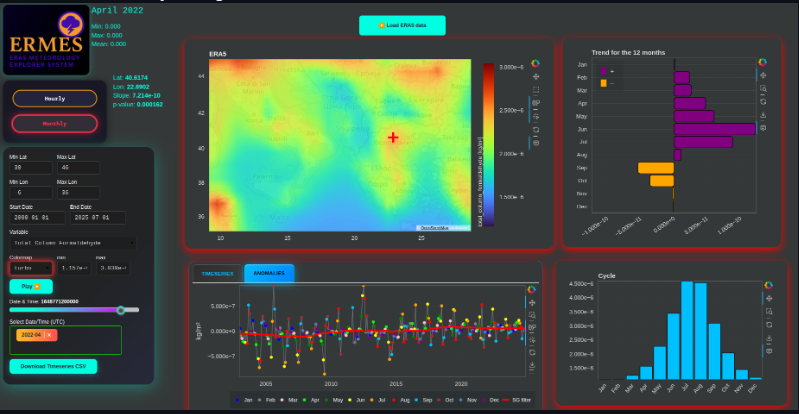
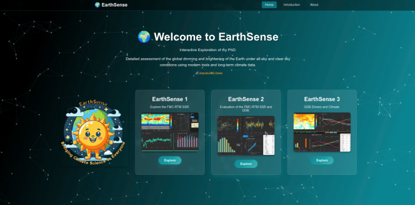
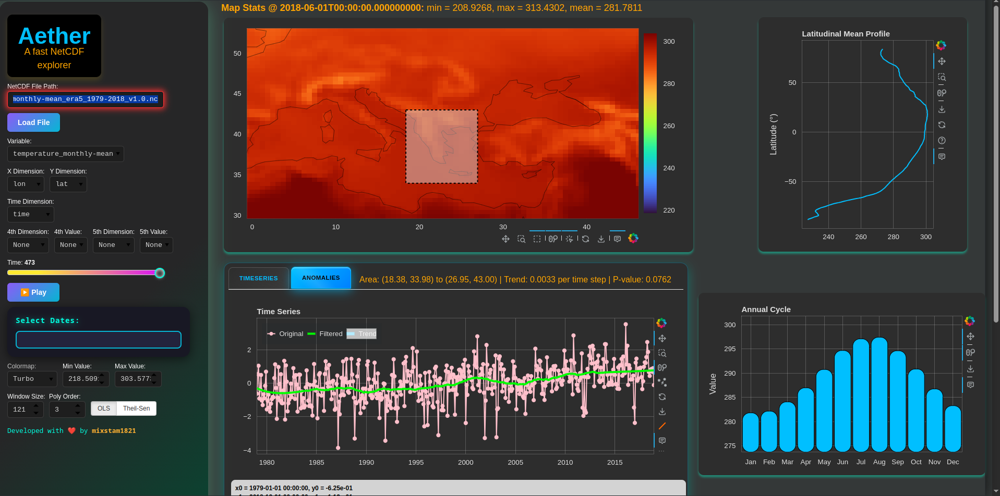
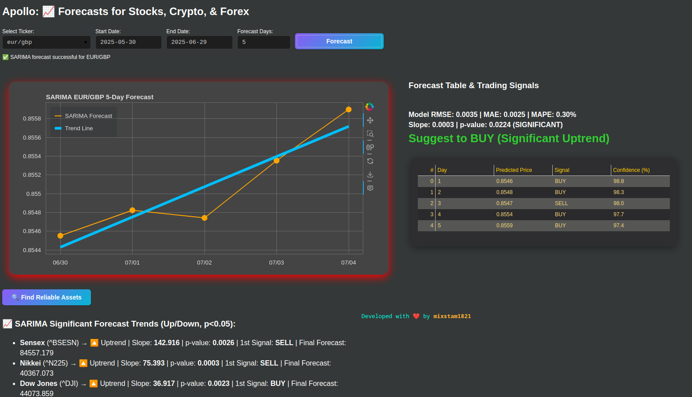

Blog Post Title
January 26, 2025
Brief description of the blog post content.
Read More
Software & Data Engineer | PhD in Atmospheric Physics
Your professional summary goes here. Write about your passion, expertise, and what drives you.
Sep 2020 - Sep 2025
Sep 2016 - Jun 2019
Sep 2012 - Sep 2016
Jun 2024 - Present (Full Time)
NIKI Digital Engineering
2020 - 2025 (Full Time)
Laboratory of Meteorology and Climatology, Physics Department, University of Ioannina
2024 - Present (Part Time)
Freelancer
2022 - Present (Part Time)
Laboratory of Meteorology and Climatology, Physics Department, University of Ioannina
2022 - 2023 (Full Time)
Dioni: Computing Infrastructure for Big-Data Processing and Analysis, University of Ioannina
2016 - Present
Freelancer





A Random Forest SSR Emulator trained with the EarthSenseData (Stamatis et al., 2025).


Atmospheric Research, Volume 322, 2025, 108140, ISSN 0169-8095. https://doi.org/10.1016/j.atmosres.2025.108140
The Global Dimming and Brightening (GDB) phenomenon plays an important role in the Earth's climate, with clouds and aerosols being the major drivers. This study investigates GDB causes by quantifying the contributions of changes in clouds, aerosols, water vapor and ozone to the surface solar radiation (SSR) changes during 1984–2018. To this aim, radiative transfer calculations were performed by the FORTH-RTM (Foundation for Research and Technology-Hellas Radiative Transfer Model) on a monthly basis and 0.5°x0.625° spatial resolution using modern and improved datasets for clouds and aerosols. Validation against high-quality ground measurements confirmed RTM's reliability. Results show a global mean brightening of 0.88 Wm−2decade−1 from 1984 to 2018, stronger over land (2.57 Wm−2decade−1) than oceans (0.19 Wm−2decade−1). Globally, changes in clouds (especially middle-level cloud amount (CA) and high-level cloud optical thickness (COT)) were the main GDB drivers. However, the contribution of aerosol optical depth (AOD) changes was remarkable over specific land areas with strong anthropogenic activity, such as Europe, India and East China. In the 80's and 90's changes in AOD were the main GDB driver, subsequently in the 2000s high-level cloud optical thickness contributed the most to GDB followed by the AOD changes, while finally in the 2010s both clouds and AOD had comparable contributions. Over land, AOD had a comparable contribution to GDB with that of clouds whereas the contribution of aerosols' asymmetry parameter (AP) and single scattering albedo (SSA), water vapor and ozone was quite small or insignificant.
Read MoreClimatic Change 177, 156 (2024). https://doi.org/10.1007/s10584-024-03810-6
The aim of this study is to investigate the possible relationship between the recent global warming and the interdecadal changes in incoming surface solar radiation (SSR), known as global dimming and brightening (GDB). The analysis is done on a monthly and annual basis on a global scale for the 35-year period 1984–2018 using surface temperature data from the European Centre for Medium-Range Weather Forecasts (ECMWF) v5 (ERA5) reanalysis and SSR fluxes from the FORTH (Foundation for Research and Technology-Hellas) radiative transfer model (RTM). Our analysis shows that on a monthly basis, SSR is correlated with temperature more strongly over global land than ocean areas. According to the RTM calculations, the SSR increased (inducing brightening) over most land areas during 1984–1999, while this increase leveled-off (causing dimming) in the 2000s and strengthened again in the 2010s. These SSR fluctuations are found to affect the global warming rates. Specifically, during the dimming phase in the 2000s, the warming rates across land areas with intense anthropogenic pollution, like Europe and East Asia, slowed down, while during the brightening phases, in the 1980s, 1990s and 2010s, the warming rates were reinforced. Although the magnitude of GDB and the Earth’s surface warming trends are not proportional, indicating that GDB is not the primary driver of the recent global warming, it seems that GDB can affect the warming rates, partly counterbalancing the dominant greenhouse warming during the dimming or accelerating the greenhouse-induced warming during the brightening phases of GDB.
Read MoreAtmosphere 2023, 14, 1258. https://doi.org/10.3390/atmos14081258
In this study, an assessment of the FORTH radiative transfer model (RTM) surface solar radiation (SSR) as well as its interdecadal changes (Δ(SSR)), namely global dimming and brightening (GDB), is performed during the 35-year period of 1984–2018. Furthermore, a thorough evaluation of SSR and (Δ(SSR)) is conducted against high-quality reference surface measurements from 1193 Global Energy Balance Archive (GEBA) and 66 Baseline Surface Radiation Network (BSRN) stations. For the first time, the FORTH-RTM Δ(SSR) was evaluated over an extended period of 35 years and with a spatial resolution of 0.5° × 0.625°. The RTM uses state-of-the-art input products such as MERRA-2 and ISCCP-H and computes 35-year-long monthly SSR and GDB, which are compared to a comprehensive dataset of reference measurements from GEBA and BSRN. Overall, the FORTH-RTM deseasonalized SSR anomalies correlate satisfactorily with either GEBA (R equal to 0.72) or BSRN (R equal to 0.80). The percentage of agreement between the sign of computed GEBA and FORTH-RTM Δ(SSR) is equal to 63.5% and the corresponding percentage for FORTH-RTM and BSRN is 54.5%. The obtained results indicate that a considerable and statistically significant increase in SSR (Brightening) took place over Europe, Mexico, Brazil, Argentina, Central and NW African areas, and some parts of the tropical oceans from the early 1980s to the late 2010s.
Read MoreAppl. Sci. 2022, 12, 10176. https://doi.org/10.3390/app121910176
This study assesses and evaluates the 40-year (1980–2019) Modern-Era Retrospective Analysis for Research and Applications v.2 (MERRA-2) surface solar radiation (SSR) as well as its interdecadal changes (Δ(SSR)) against high quality reference surface measurements from 1397 Global Energy Balance Archive (GEBA) and 73 Baseline Surface Radiation Network (BSRN) stations. The study is innovative since MERRA-2 (Δ(SSR)) has never been evaluated in the past, while the MERRA-2 SSR fluxes themselves have not been evaluated in such large spatial scale, which is global here, and temporal basis, which counts 40-years. Other novelties of the study are the use of the highest quality BSRN stations, done for the first time in such an evaluation, as well as the use of a greater number of reference-GEBA stations than in other studies. Moreover, the assessment and evaluation in this study are largely based on SSR anomalies, while being done in depth, at spatial scales ranging from the local to global/hemispherical, and separately for land and ocean areas, and at temporal scales spanning intervals from decadal sub-periods to 40 years. Overall, the MERRA-2 deseasonalized SSR anomalies correlate well with either GEBA (R equal to 0.61) and BSRN (R equal to 0.62).
Read More